The Digital Archives of Psi Upsilon · founded 1833
Search 21,000 pages of Psi Upsilon history.
Every scanned volume in the archive — the Diamond, the Convention Records, the Annals, the printed histories — read as full text. Search once and see the exact page your words appear on.
"quotes" to require it exactly.
Browse
The collections
Eight runs of material, from the first convention minutes of 1872 to the last printed Diamond.
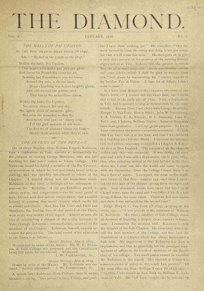
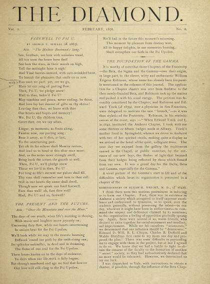
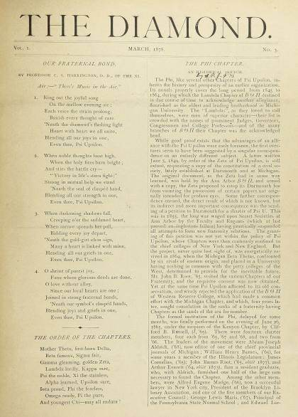
The Diamond
The Fraternity's magazine, published 1878-1887 and again from 1920 to 2015. The single richest record of Psi Upsilon life: chapter letters, alumni notes, obituaries, convention coverage and photographs.
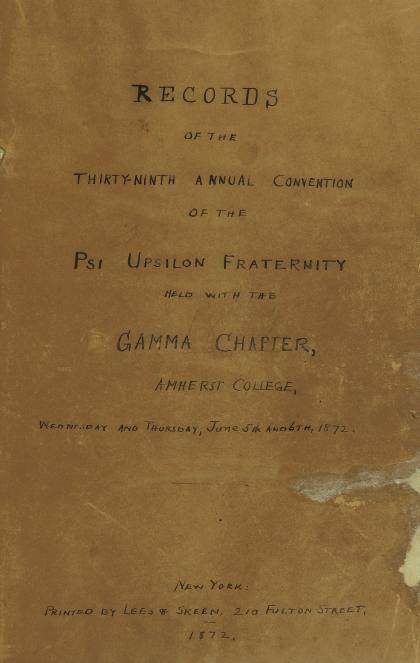
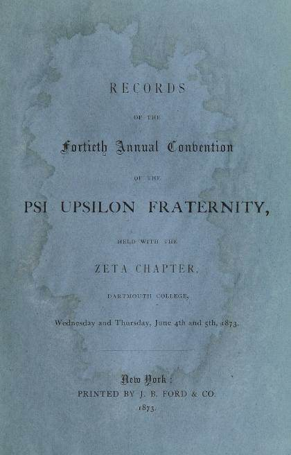
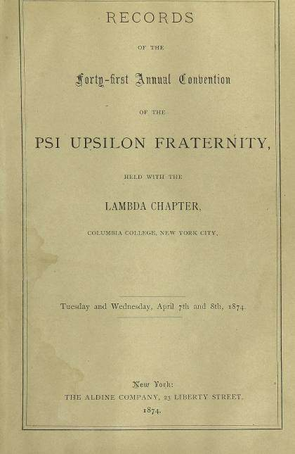
Convention Records
Official proceedings of the annual Convention, 1872 to 1972. Delegate rolls, reports, resolutions and addresses.
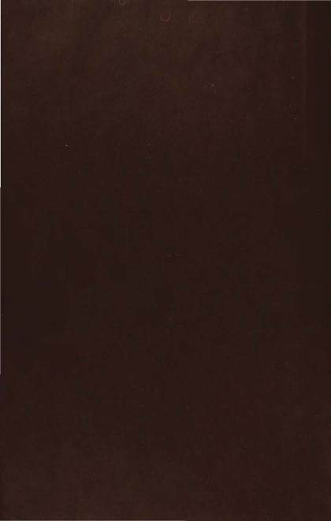
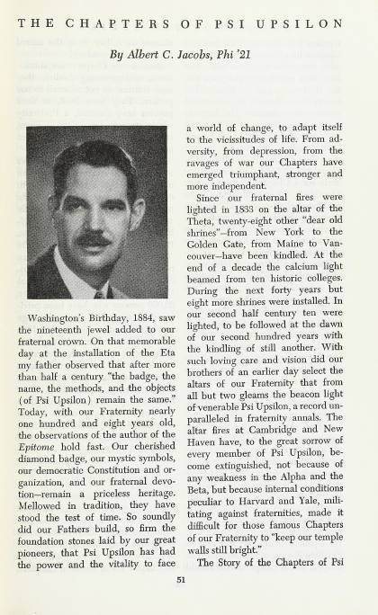

Annals of Psi Upsilon
The 1941 centennial history of the Fraternity, issued in twelve parts.
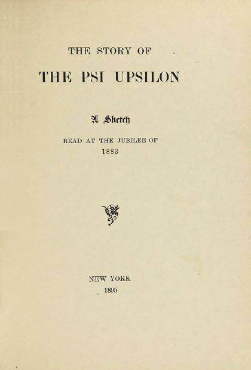
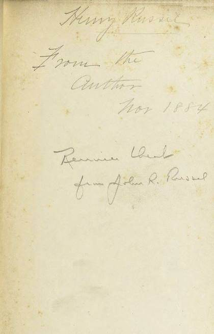
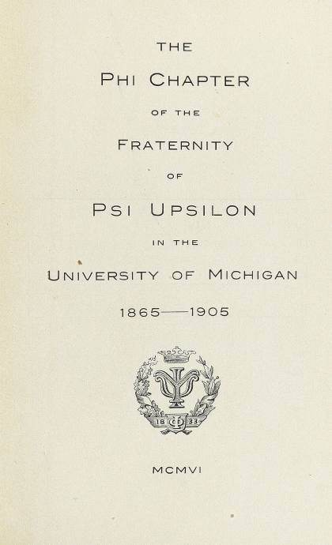
Printed Histories
Book-length histories of the Fraternity and of individual chapters, from 1883 onward.
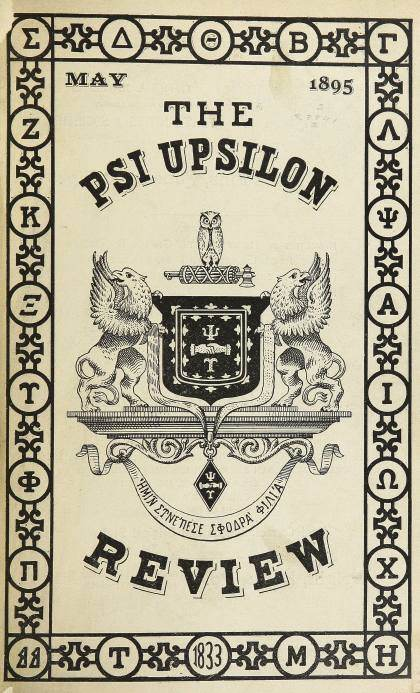
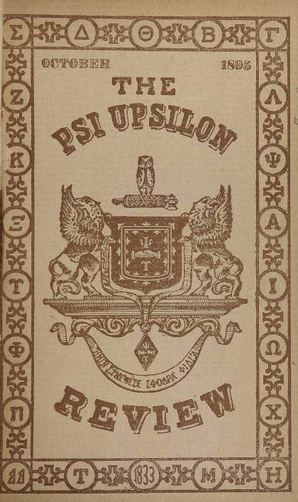
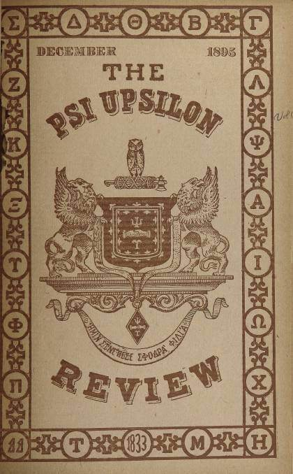
The Review
A short-lived newsletter published by The Psi Upsilon Review Company of Detroit, 1895-1896.
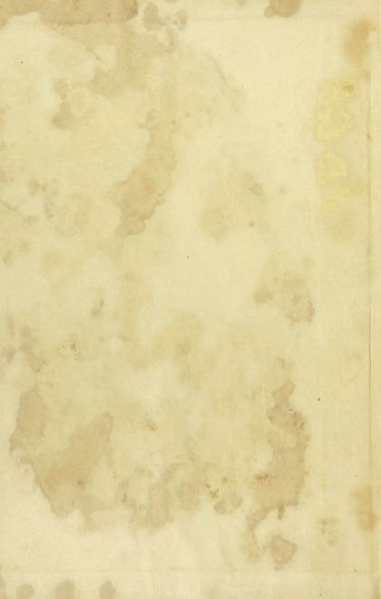
Songbooks
Psi Upsilon printed its first songbook in 1849. These are the bound editions published by the Executive Council.
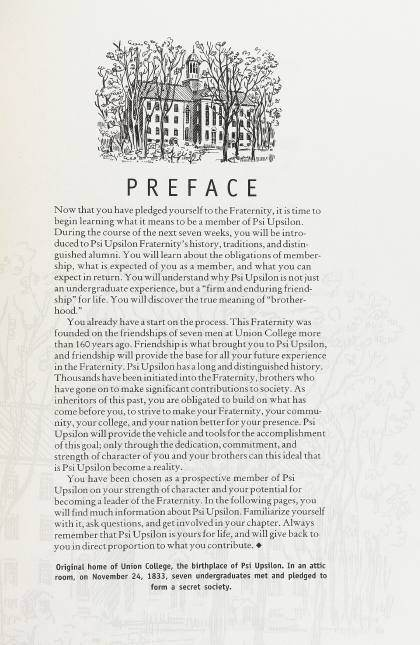
Member Education
Pledge manuals and editions of the College Tablet used to teach new members.
Special Collections
Material that doesn't fit the serial runs: committee presentations, one-off documents and curiosities.
The brothers
People, and the pages that name them
Notable alumni tied straight to the primary sources — 2,633 volume appearances found so far across 93 men.


The roll
Fifty chapters, 1833–2025
23 active today. Each shield leads to the chapter's own page: its dates, its printed history, its brothers, and every mention of it in the archive.
 Theta
Theta Delta
Delta Beta
Beta Sigma
Sigma Gamma
Gamma Zeta
Zeta Lambda
Lambda Kappa
Kappa Psi
Psi Xi
Xi Alpha
Alpha Upsilon
Upsilon Iota
Iota Phi
Phi Omega
Omega Pi
Pi Chi
Chi Beta Beta
Beta Beta Eta
Eta Tau
Tau Mu
Mu Rho
Rho Epsilon
Epsilon Omicron
Omicron Delta Delta
Delta Delta Theta Theta
Theta Theta Nu
Nu Epsilon Phi
Epsilon Phi Zeta Zeta
Zeta Zeta Epsilon Nu
Epsilon Nu Epsilon Omega
Epsilon Omega Theta Epsilon
Theta Epsilon Nu Alpha
Nu Alpha Gamma Tau
Gamma Tau Chi Delta
Chi Delta Zeta Tau
Zeta Tau Epsilon Iota
Epsilon Iota Phi Beta
Phi Beta Kappa Phi
Kappa Phi Beta Kappa
Beta Kappa Beta Alpha
Beta Alpha Phi Delta
Phi Delta Lambda Sigma
Lambda Sigma Alpha Omicron
Alpha Omicron Sigma Phi
Sigma Phi Delta Nu
Delta Nu Phi Nu
Phi Nu Theta Pi
Theta Pi Tau Epsilon
Tau Epsilon Delta Omicron
Delta OmicronFrom the Archives
Stories out of the collection
Short pieces written from the material in these volumes.
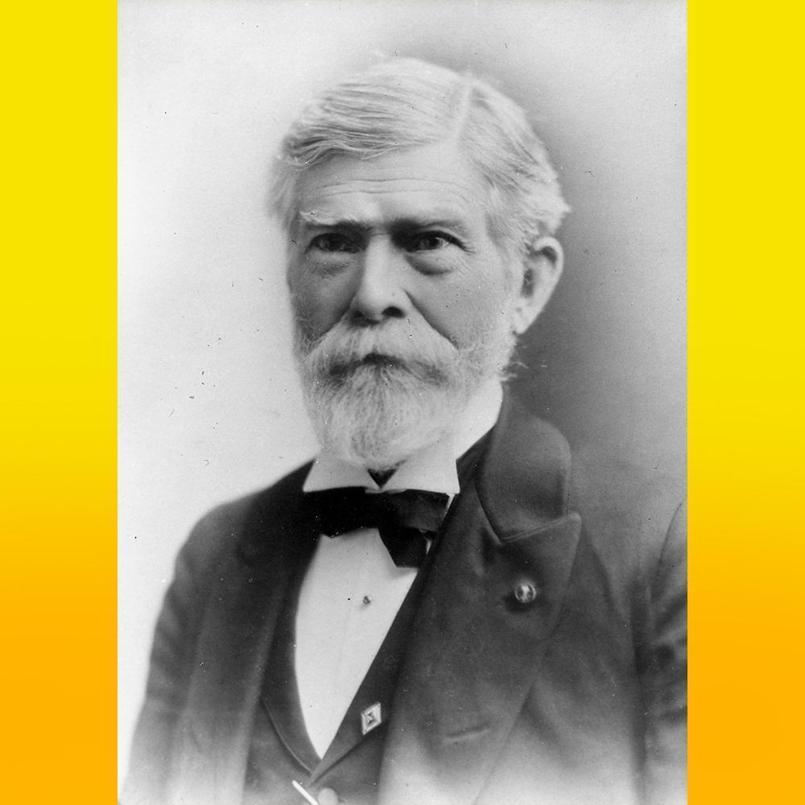
Martindale's 1898 address on the founding of Psi Upsilon
In 1898, Edward Martindale Theta 1836, a founder of Psi Upsilon, attended the 65th Psi Upsilon Convention in Minneapolis, MN on May 5th. He gave a rem…
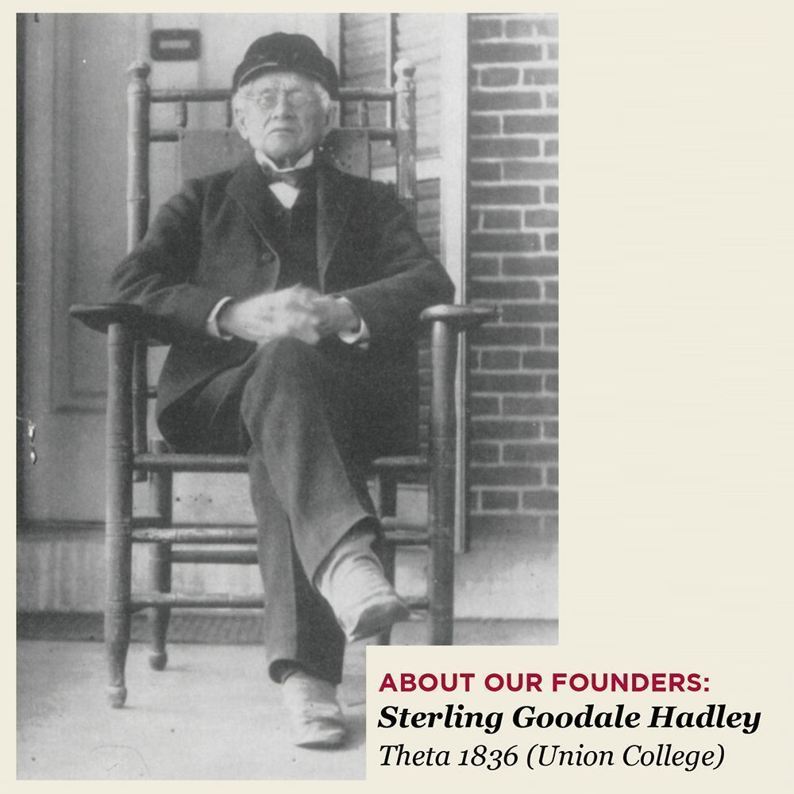
About our founders: Sterling Goodale Hadley
Sterling Goodale Hadley - Theta 1836 (Union College) by Christopher Lawrence Tang ESQ, Gamma Tau '01 (Georgia Tech)…
"All Aboard for the Psi Upsilon Special"
Reprinted from an article in the August 1989 Diamond, by Tip Hinsdale, Xi '39.…
Also in the archives
Beyond the printed page
The archive is more than paper. These sections are built and waiting for their content.
Photographs
Thousands of scanned photographs, currently hosted on Flickr.
Live · off-siteVideo
Convention footage, interviews and chapter films on the Fraternity's YouTube channel.
Live · off-siteSong recordings
The Fraternity's songs, playable in the browser and cross-referenced against the printed music in the songbooks.
Live · 10 recordingsHeraldry
The coat of arms, badge, flag and founders' plaque, with all fifty chapter shields.
Live · 50 chapter armsObjects & artefacts
Badges, banners, gavels and convention souvenirs, photographed and catalogued with their provenance.
Section ready · no content yet